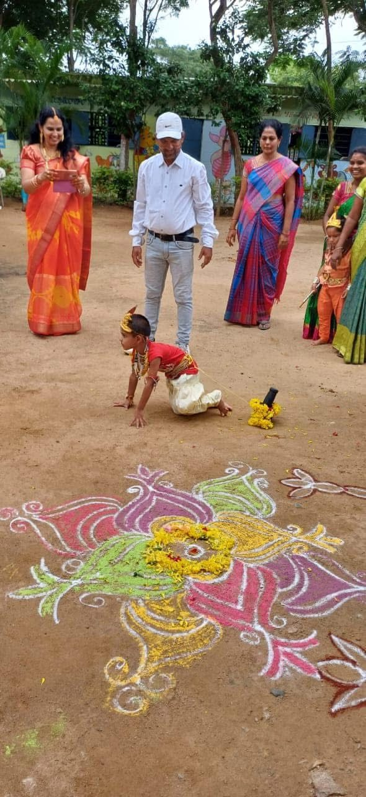

Step 1 · CNR School of Excellence
It starts with strong roots
Children begin at CNR School of Excellence, where they build the basics that everything else rests on: reading, mathematics, spoken English and good habits. Festivals like Krishnashtami are celebrated on campus, so children grow up proud of who they are.